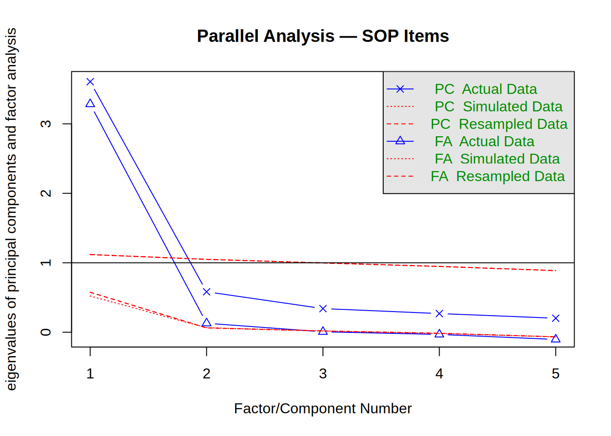

CFA: Self-Oriented Perfectionism
Data: Williams & Edwards (2021; OSF m5dy6)
Dataset: Self-Oriented Perfectionism Scale (SOP)
we_path <- here::here("data", "we_data.csv")
if (!file.exists(we_path)) {
download.file("https://osf.io/download/6mdb4/", we_path)
}
we_raw <- read.csv(we_path)
we_raw <- dplyr::rename(we_raw, Att_check = SOP_6)
# Exclude: under-18, non-students, >6 missing study items, failed attention check, duplicates
we_vars <- c(
paste0("PASS_", c(1:9, 16:18)),
paste0("NGSE_", 1:8),
paste0("SOP_", 1:5)
)
we_raw <- we_raw[is.na(we_raw$Age) | we_raw$Age != 1, ]
we_raw <- we_raw[is.na(we_raw$Student) | we_raw$Student == 1, ]
we_raw$nmiss <- rowSums(is.na(we_raw[, we_vars]))
we_raw <- we_raw[we_raw$nmiss <= 6, ]
we_raw <- we_raw[!is.na(we_raw$Att_check) & we_raw$Att_check == 5, ]
we_raw <- we_raw[!duplicated(we_raw$PID_deID), ]This example uses data from a conceptual replication of Seo (2008), examining self-efficacy as a mediator between self-oriented perfectionism and academic procrastination (Williams & Edwards, 2021; OSF: osf.io/m5dy6).
We focus here on the SOP subscale, which measures self-oriented perfectionism—the tendency to set high personal standards and be self-critical when those standards are not met:
| Items | Content |
|---|---|
| SOP_1–SOP_5 | Self-oriented perfectionism (5 items) |
Items use a 5-point Likert scale. The scale is theoretically unidimensional: all five items reflect a single latent construct. Data were collected online (Prolific Academic); N = 623 recruited.
Following the preregistered exclusion criteria:
- Non-students or participants under 18 were excluded.
- Participants missing more than 6 items across the three main scales (PASS, NGSE, SOP) were excluded.
- Participants who failed the attention check (SOP_6; correct response = 5) were excluded.
- Duplicate Prolific IDs were removed.
The load-data chunk above applies all four criteria, reducing the sample to approximately N = 480.
Descriptive Statistics
modelsummary::datasummary_skim(sop_data)| Unique | Missing Pct. | Mean | SD | Min | Median | Max | Histogram | |
|---|---|---|---|---|---|---|---|---|
| SOP_1 | 5 | 0 | 3.5 | 1.1 | 1.0 | 4.0 | 5.0 | ![](data:image/png;base64,%20iVBORw0KGgoAAAANSUhEUgAABLAAAAGQCAMAAACJa2lsAAAAhFBMVEUAAAA+Pj5AQEBDQ0NERERLS0tNTU1QUFBSUlJTU1NVVVVWVlZbW1tcXFxiYmJjY2NnZ2doaGhpaWlqampwcHBxcXF2dnZ3d3d4eHh5eXl/f3+Dg4OHh4eIiIiWlpafn5+srKyzs7O7u7vExMTMzMzR0dHX19fo6Ojw8PD09PT19fX////yjW74AAAMbElEQVR4nO3Ut441xxlFUUqivKfML28p//7vp2wwwQ7UaLB67tFacQUHH1D7s/8AvIjPnh4A8L8SLOBlCBbwMgQLeBmCBbwMwQJehmABL0OwgJchWMDLECzgZQgW8DIEC3gZggW8DMFi3F8/fRi/+ufTx3h5gsW43372cfz96WO8PMFinGAtESzGCdYSwWKcYC0RLMYJ1hLBYpxgLREsxgnWEsFinGAtESzGCdYSwWKcYC0RLMYJ1hLBYpxgLREsxgnWEsFinGAtESzGCdYSwWKcYC0RLMYJ1hLBYpxgLREsxgnWEsFinGAtESzGCdYSwWKcYC0RLMYJ1hLBYpxgLREsxgnWEsFinGAtESzGCdYSwWKcYC0RLMYJ1hLBYpxgLREsxgnWEsFinGAtESzGCdYSwWKcYC0RLMYJ1hLBYpxgLREsxgnWEsFinGAtESzGCdYSwWKcYC0RLMYJ1hLBYpxgLREsxgnWEsFinGAtESzGCdYSwWKcYC0RLMYJ1hLBYpxgLREsxgnWEsFinGAtESzGCdYSwWKcYC0RLMYJ1hLBYpxgLREsxgnWEsFinGAtESzGCdYSwWKcYC0RLMYJ1hLBYpxgLREsxgnWEsFinGAtESzGCdYSwWKcYC0RLMYJ1hLBYpxgLREsxgnWEsFinGAtESzGCdYSwWKcYC0RLMYJ1hLBYpxgLREsxgnWEsFinGAtESzGCdYSwWKcYC0RLMYJ1hLBYpxgLREsxgnWEsFinGAtESzGCdYSwWKcYC0RLMYJ1hLBYpxgLREsxgnWEsFinGAtESzGCdYSwWKcYC0RLMYJ1hLBYpxgLREsxgnWEsFinGAtESzGCdYSwWKcYC0RLMYJ1hLBYpxgLREsxgnWEsFinGAtESzGCdYSwWKcYC0RLMYJ1hLBYpxgLREsxgnWEsFinGAtESzGCdYSwWKcYC0RLMYJ1hLBYpxgLREsxgnWEsFinGAtESzGCdYSwWKcYC0RLMYJ1hLBYpxgLREsxgnWEsFinGAtESzGCdYSwWKcYC0RLMYJ1hLBYpxgLREsxgnWEsFinGAtESzGCdYSwWKcYC0RLMYJ1hLBYpxgLREsxgnWEsFinGAtESzGCdYSwWKcYC0RLMYJ1hLBYpxgLREsxgnWEsFinGAtESzGCdYSwWKcYC0RLMYJ1hLBYpxgLRGsIV8+/R/f+fPTx3gjWEsEa8hfnv6P7/zx6WO8EawlgjVEsIpgLRGsIYJVBGuJYA0RrCJYSwRriGAVwVoiWEMEqwjWEsEaIlhFsJYI1hDBKoK1RLCGCFYRrCWCNUSwimAtEawhglUEa4lgDRGsIlhLBGuIYBXBWiJYQwSrCNYSwRoiWEWwlgjWEMEqgrVEsIYIVhGsJYI1RLCKYC0RrCGCVQRriWANEawiWEsEa4hgFcFaIlhDBKsI1hLBGiJYRbCWCNYQwSqCtUSwhghWEawlgjVEsIpgLRGsIYJVBGuJYA0RrCJYSwRriGAVwVoiWEMEqwjWEsEaIlhFsJYI1hDBKoK1RLCGCFYRrCWCNUSwimAtEawhglUEq/z6G59/FN+5sluwhghWEazyzadP8c6V3YI1RLCKYBXB4nGCVQSrCBaPE6wiWEWweJxgFcEqgsXjBKsIVhEsHidYRbCKYPE4wSqCVQSLxwlWEawiWDxOsIpgFcHicYJVBKsIFo8TrCJYRbB4nGAVwSqCxeMEqwhWESweJ1hFsIpg8TjBKoJVBIvHCVYRrCJYPE6wimAVweJxglUEqwgWjxOsIlhFsHicYBXBKoLF4wSrCFYRLB4nWEWwimCd9bcvP4x/PH2LN4JVBKsI1lH/fvrG7/z06WO8EawiWEWwjvrX0zd+5ydPH+ONYBXBKoJ1lGAVwSqCVQTrKMEqglUEqwjWUYJVBKsIVhGsowSrCFYRrCJYRwlWEawiWEWwjhKsIlhFsIpgHSVYRbCKYBXBOkqwimAVwSqCdZRgFcEqglUE6yjBKoJVBKsI1lGCVQSrCFYRrKMEqwhWEawiWEcJVhGsIlhFsI4SrCJYRbCKYB0lWEWwimAVwTpKsIpgFcEqgnWUYBXBKoJVBOsowSqCVQSrCNZRglUEqwhWEayjBKsIVhGsIlhHCVYRrCJYRbCOEqwiWEWwimAdJVhFsIpgFcE6SrCKYBXBKoJ1lGAVwSqCVQTrKMEqglUEqwjWUYJVBKsIVhGsowSrCFYRrCJYRwlWEawiWEWwjhKsIlhFsIpgHSVYRbCKYBXBOkqwimAVwSqCdZRgFcEqglUE6yjBKoJVBKsI1lGCVQSrCFYRrKMEqwhWEawiWEcJVhGsIlhFsI4SrCJYRbCKYB0lWEWwimAVwTpKsIpgFcEqgnWUYBXBKoJVBOsowSqCVQSrCNZRglUEqwhWEayjBKsIVhGsIlhHCVYRrCJYRbCOEqwiWEWwimAdJVhFsIpgFcE6SrCKYBXBKoJ1lGAVwSqCVQTrKMEqglUEqwjWUYJVBKsIVhGsowSrCFYRrCJYRwlWEawiWEWwjhKsIlhFsIpgHSVYRbCKYBXBOkqwimAVwSqCdZRgFcEqglUE6yjBKoJVBKsI1lGCVQSrCFYRrKMEqwhWEawiWEcJVhGsIlhFsI4SrCJYRbCKYB0lWEWwimAVwTpKsIpgFcEqgnWUYBXBKoJVBOsowSqCVQSrCNZRglUEqwhWEayjBKsIVhGsIlhHCVYRrCJYRbCOEqwiWEWwimAdJVhFsIpgFcE6SrCKYBXBKoJ1lGAVwSqCVQTrKMEqglUEqwjWUYJVBKsIVhGsowSrCFYRrCJYRwlWEawiWEWwjhKsIlhFsIpgHSVYRbCKYBXBOkqwimAVwSqCdZRgFcEqglUE6yjBKoJVBKsI1lGCVQSrCFYRrKMEqwhWEawiWEcJVhGsIlhFsI4SrCJYRbCKYB0lWEWwimAVwTpKsIpgFcEqgnWUYBXBKoJVBOsowSqCVQSrCNZRglUEqwhWEayjBKsIVhGsIlhHCVYRrCJYRbCOEqwiWEWwimAdJVhFsIpgFcE6SrCKYBXBKoJ1lGAVwSqCVQTrKMEqglUEqwjWUYJVBKsIVhGsowSrCFYRrCJYRwlWEawiWEWwjhKsIlhFsIpgHSVYRbCKYBXBOkqwimAVwSqCdZRgFcEqglUE6yjBKoJVBKsI1lGCVQSrCFYRrKMEqwhWEawiWEcJVhGsIlhFsI4SrCJYRbCKYB0lWEWwimAVwTpKsIpgFcEqgnWUYBXBKoJVBOsowSqCVQSrCNZRglUEqwhWEayjBKsIVhGsIlhHCVYRrCJYRbCOEqwiWEWwimAdJVhFsIpgFcE6SrCKYBXBKoJ1lGAVwSqCVQTrKMEqglUEqwjWUYJVBKsIVhGsowSrCFYRrCJYRwlWEawiWEWwjhKsIlhFsIpgHSVYRbCKYBXBOkqwimAVwSqCdZRgFcEqglUE6yjBKoJVBKsI1lGCVQSrCFb5vwjWtz7/KL7+9I3fEawiWEWwypXd1x4TBKsIVhGscmW3YN0mWEWwimCVK7sF6zbBKoJVBKtc2S1YtwlWEawiWOXKbsG6TbCKYBXBKld2C9ZtglUEqwhWubJbsG4TrCJYRbDKld2CdZtgFcEqglWu7Bas2wSrCFYRrHJlt2DdJlhFsIpglSu7Bes2wSqCVQSrXNktWLcJVhGsIljlym7Buk2wimAVwSpXdgvWbYJVBKsIVrmyW7BuE6wiWEWwypXdgnWbYBXBKoJVruwWrNsEqwhWEaxyZbdg3SZYRbCKYJUruwXrNsEqglUEq1zZLVi3CVYRrCJY5cpuwbpNsIpgFcEqV3YL1m2CVQSrCFa5sluwbhOsIlhFsMqV3YJ1m2AVwSqCVa7sFqzbBKsIVhGscmW3YN0mWEWwimCVK7sF6zbBKoJVBKtc2S1YtwlWEawiWOXKbsG6TbCKYBXBKld2C9ZtglUEqwhWubJbsG4TrCJYRbDKld2CdZtgFcEqglWu7Bas2wSrCFYRrHJlt2DdJlhFsIpglSu7Bes2wSqCVQSrXNktWLcJVhGsIljlym7Buk2wimAVwSpXdgvWbd/98qP4w9OneOc3Tx/jzRdPn+KdPz19jDdfe/oU73xlwfr9p4/il99+esGbX3zv6QVvvvjh0wve/PhHTy9484OfPb3gzfd//vSCNx/nA3363VcWLIAnCRbwMgQLeBmCBbwMwQJehmABL0OwgJchWMDLECzgZQgW8DIEC3gZggW8DMECXoZgAS/jv2QJEi/mksFuAAAAAElFTkSuQmCC) |
| SOP_2 | 5 | 0 | 3.3 | 1.2 | 1.0 | 3.0 | 5.0 | ![](data:image/png;base64,%20iVBORw0KGgoAAAANSUhEUgAABLAAAAGQCAMAAACJa2lsAAAAflBMVEUAAAA+Pj5LS0tQUFBTU1NVVVVWVlZbW1tcXFxfX19iYmJjY2NnZ2dpaWlqampwcHBxcXFycnJ2dnZ3d3d4eHh/f3+Dg4OHh4eIiIiLi4uWlpafn5+lpaWnp6esrKy7u7vBwcHExMTMzMzX19fu7u7v7+/w8PD09PT7+/v///91hCUMAAAPKUlEQVR4nO3Ux65l23FFQcpQogzlnrz35v9/UL1SNQYIJSaIW2chor0aE4m9x8/+B+BD/OyrBwD8fwkW8DEEC/gYggV8DMECPoZgAR9DsICPIVjAxxAs4GMIFvAxBAv4GIIFfAzBAj6GYPG4f/nph/Hn//nVx/h4gsXj/vJnP45/++pjfDzB4nGC9RLB4nGC9RLB4nGC9RLB4nGC9RLB4nGC9RLB4nGC9RLB4nGC9RLB4nGC9RLB4nGC9RLB4nGC9RLB4nGC9RLB4nGC9RLB4nGC9RLB4nGC9RLB4nGC9RLB4nGC9RLB4nGC9RLB4nGC9RLB4nGC9RLB4nGC9RLB4nGC9RLB4nGC9RLB4nGC9RLB4nGC9RLB4nGC9RLB4nGC9RLB4nGC9RLB4nGC9RLB4nGC9RLB4nGC9RLB4nGC9RLB4nGC9RLB4nGC9RLB4nGC9RLB4nGC9RLB4nGC9RLB4nGC9RLB4nGC9RLB4nGC9RLB4nGC9RLB4nGC9RLB4nGC9RLB4nGC9RLB4nGC9RLB4nGC9RLB4nGC9RLB4nGC9RLB4nGC9RLB4nGC9RLB4nGC9RLB4nGC9RLB4nGC9RLB4nGC9RLB4nGC9RLB4nGC9RLB4nGC9RLB4nGC9RLB4nGC9RLB4nGC9RLB4nGC9RLB4nGC9RLB4nGC9RLB4nGC9RLB4nGC9RLB4nGC9RLB4nGC9RLB4nGC9RLB4nGC9RLB4nGC9RLB4nGC9RLB4nGC9RLB4nGC9RLB4nGC9RLB4nGC9ZIPDdZ//+LnP4x/+Opj8CsJ1ks+NFj/9dVf3nf+8KuPwa8kWC8RrJlg/dgE6yWCNROsH5tgvUSwZj9QsP79h/EfX32K/yNYLxGs2Y8TrH/+6lN85++/+hjfCNZLBGv24wTrn776FN/5u68+xjeC9RLBmglWEawiWCvBmglWEawiWCvBmglWEawiWCvBmglWEawiWCvBmglWEawiWCvBmglWEawiWCvBmglWEawiWCvBmglWEawiWCvBmglWEawiWCvBmglWEawiWCvBmglWEawiWCvBmglWEawiWCvBmglWEawiWCvBmglWEawiWCvBmglWEawiWCvBmglWEawiWCvBmglWEawiWCvBmglWEawiWCvBmglWEawiWCvBmglWEawiWCvBmglWEawiWCvBmglWEawiWCvBmglWEawiWCvBmglWEawiWCvBmglWEawiWCvBmglWEawiWCvBmglWEawiWCvBmglWEawiWCvBmglWEawiWCvBmglWEawiWCvBmglWEawiWCvBmglWEawiWCvBmglWEawiWCvBmglWEawiWCvBmglWEawiWCvBmglWEawiWCvBmglWEawiWCvBmglWEazy4wTr9776FN+57BasmWAVwSo/TrB+86tP8Z3LbsGaCVYRrCJY5bJbsGaCVQSrCFa57BasmWAVwSqCVS67BWsmWEWwimCVy27BmglWEawiWOWyW7BmglUEqwhWuewWrJlgFcEqglUuuwVrJlhFsIpglctuwZoJVhGsIljlsluwZoJVBKsIVrnsFqyZYBXBKoJVLrsFayZYRbCKYJXLbsGaCVYRrCJY5bJbsGaCVQSrCFa57BasmWAVwSqCVS67BWsmWEWwimCVy27BmglWEawiWOWyW7BmglUEqwhWuewWrJlgFcEqglUuuwVrJlhFsIpglctuwZoJVhGsIljlsluwZoJVBKsIVrnsFqyZYBXBKoJVLrsFayZYRbCKYJXLbsGaCVYRrCJY5bJbsGaCVQSrCFa57BasmWAVwSqCVS67BWsmWEWwimCVy27BmglWEawiWOWyW7BmglUEqwhWuewWrJlgFcEqglUuuwVrJlhFsIpglctuwZoJVhGsIljlsluwZoJVBKsIVrnsFqyZYBXBKoJVLrsFayZYRbCKYJXLbsGaCVYRrCJY5bJbsGaCVQSrCFa57BasmWAVwSqCVS67BWsmWEWwimCVy27BmglWEawiWOWyW7BmglUEqwhWuewWrJlgFcEqglUuuwVrJlhFsIpglctuwZoJVhGsIljlsluwZoJVBKsIVrnsFqyZYBXBKoJVLrsFayZYRbCKYJXLbsGaCVYRrCJY5bJbsGaCVQSrCFa57BasmWAVwSqCVS67BWsmWEWwimCVy27BmglWEawiWOWyW7BmglUEqwhWuewWrJlgFcEqglUuuwVrJlhFsIpglctuwZoJVhGsIljlsluwZoJVBKsIVrnsFqyZYBXBKoJVLrsFayZYRbCKYJXLbsGaCVYRrCJY5bJbsGaCVQSrCFa57BasmWAVwSqCVS67BWsmWEWwimCVy27BmglWEawiWOWyW7BmglUEqwhWuewWrJlgFcEqglUuuwVrJlhFsIpglctuwZoJVhGsIljlsluwZoJVBKsIVrnsFqyZYBXBKoJVLrsFayZYRbCKYJXLbsGaCVYRrCJY5bJbsGaCVQSrCFa57BasmWAVwSqCVS67BWsmWEWwimCVy27BmglWEawiWOWyW7BmglUEqwhWuewWrJlgFcEqglUuuwVrJlhFsIpglctuwZoJVhGsIljlsluwZoJVBKsIVrnsFqyZYBXBKoJVLrsFayZYRbCKYJXLbsGaCVYRrCJY5bJbsGaCVQSrCFa57BasmWAVwSqCVS67BWsmWEWwimCVy27BmglWEawiWOWyW7BmglUEqwhWuewWrJlgFcEqglUuuwVrJlhFsIpglctuwZoJVhGsIljlsluwZoJVBKsIVrnsFqyZYBXBKoJVLrsFayZYRbCKYJXLbsGaCVYRrCJY5bJbsGaCVQSrCFa57BasmWAVwSqCVS67BWsmWEWwimCVy27BmglWEawiWOWyW7BmglUEqwhWuewWrJlgFcEqglUuuwVrJlhFsIpglctuwZoJVhGsIljlsluwZoJVBKsIVrnsFqyZYBXBKoJVLrsFayZYRbCKYJXLbsGaCVYRrCJY5bJbsGaCVQSrCFa57BasmWAVwSqCVS67BWsmWEWwimCVy27BmglWEawiWOWyW7BmglUEqwhWuewWrJlgFcEqglUuuwVrJlhFsIpglctuwZoJVhGsIljlsluwZoJVBKsIVrnsFqyZYBXBKoJVLrsFayZYRbCKYJXLbsGaCVYRrCJY5bJbsGaCVQSrCFa57BasmWAVwSqCVS67BWsmWEWwimCVy27BmglWEawiWOWyW7BmglUEqwhWuewWrJlgFcEqglUuuwVrJlhFsIpglctuwZoJVhGsIljlsluwZoJVBKsIVrnsFqyZYBXBKoJVLrtPj//mpx/Fn371jb8jWEWwimCVy+7bY4JgFcEqglUuuwVrJlhFsIpglctuwZoJVhGsIljlsluwZoJVBKsIVrnsFqyZYBXBKoJVLrsFayZYRbCKYJXLbsGaCVYRrCJY5bJbsGaCVQSrCFa57BasmWAVwSqCVS67BWsmWEWwimCVy27BmglWEawiWOWyW7BmglUEqwhWuewWrJlgFcEqglUuuwVrJlhFsIpglctuwZoJVhGsIljlsluwZoJVBKsIVrnsFqyZYBXBKoJVLrsFayZYRbCKYJXLbsGaCVYRrCJY5bJbsGaCVQSrCFa57BasmWAVwSqCVS67BWsmWEWwimCVy27BmglWEawiWOWyW7BmglUEqwhWuewWrJlgFcEqglUuuwVrJlhFsIpglctuwZoJVhGsIljlsluwZoJVBKsIVrnsFqyZYBXBKoJVLrsFayZYRbCKYJXLbsGaCVYRrCJY5bJbsGaCVQSrCFa57BasmWAVwSqCVS67BWsmWEWwimCVy27BmglWEawiWOWyW7BmglUEqwhWuewWrJlgFcEqglUuuwVrJlhFsIpglctuwZoJVhGsIljlsluwZoJVBKsIVrnsFqyZYBXBKoJVLrsFayZYRbCKYJXLbsGaCVYRrCJY5bJbsGaCVQSrCFa57BasmWAVwSqCVS67BWsmWEWwimCVy27BmglWEawiWOWyW7BmglUEqwhWuewWrJlgFcEqglUuuwVrJlhFsIpglctuwZoJVhGsIljlsluwZoJVBKsIVrnsFqyZYBXBKoJVLrsFayZYRbCKYJXLbsGaCVYRrCJY5bJbsGaCVQSrCFa57BasmWAVwSqCVS67BWsmWEWwimCVy27BmglWEawiWOWyW7BmglUEqwhWuewWrJlgFcEqglUuuwVrJlhFsIpglctuwZoJVhGsIljlsluwZoJVBKsIVrnsFqyZYBXBKoJVLrsFayZYRbCKYJXLbsGaCVYRrCJY5bJbsGaCVQSrCFa57BasmWAVwSqCVS67BWsmWEWwimCVy27BmglWEawiWOWyW7BmglUEqwhWuewWrJlgFcEqglUuuwVrJlhFsIpglctuwZoJVhGsIljlsluwZoJVBKsIVrnsFqyZYBXBKoJVLrsFayZYRbCKYJXLbsGaCVYRrCJY5bJbsGaCVQSrCFa57BasmWAVwSqCVS67BWsmWEWwimCVy27BmglWEawiWOWyW7BmglUEqwhWuewWrJlgFcEqglUuuwVrJlhFsIpglctuwZoJVhGsIljlsluwZoJVBKsIVrnsFqyZYBXBKoJVLrsFayZYRbCKYJXLbsGaCVYRrCJY5bJbsGaCVQSrCFa57BasmWAVwSqCVS67BWsmWEWwimCVy27BmglWEawiWOWyW7BmglUEqwhWuewWrJlgFcEqglUuuwVrJlhFsIpglctuwZoJVhGsIljlsluwZoJVBKsIVrnsFqyZYBXBKoJVLrsFayZYRbCKYJXLbsGaCVYRrCJY5bJbsGaCVQSrCFa57BasmWAVwSqCVS67BWsmWEWwimCVy27BmglWEawiWOWyW7BmglUEqwhWuewWrJlgFcEqglUuuwVrJlhFsIpglctuwZoJVhGsIljlsluwZoJVBKsIVrnsFqyZYBXBKoJVLrsFayZYRbCKYJXLbsGaCVYRrCJY5bJbsGaCVQSrCFa57Bas2W//64/ib7/6FN/5i68+xje//OpTfOcfv/oY3/zGV5/iO7+2YP31Tz+KP/utr17wzZ/8/KsXfPPLX3z1gm/+4Pe/esE3v/tHX73gm9/5469e8M2P8wP99Fe/tmABfCXBAj6GYAEfQ7CAjyFYwMcQLOBjCBbwMQQL+BiCBXwMwQI+hmABH0OwgI8hWMDHECzgY/wvHWs+BRUqKNYAAAAASUVORK5CYII=) |
| SOP_3 | 5 | 0 | 3.0 | 1.1 | 1.0 | 3.0 | 5.0 | ![](data:image/png;base64,%20iVBORw0KGgoAAAANSUhEUgAABLAAAAGQCAMAAACJa2lsAAAAgVBMVEUAAAAwMDAzMzM8PDw+Pj5AQEBERERLS0tQUFBTU1NVVVVWVlZbW1tcXFxiYmJjY2NnZ2dpaWlqampwcHBxcXF2dnZ3d3d7e3t/f3+Dg4OHh4eIiIiMjIyWlpafn5+np6esrKy1tbW7u7u8vLzMzMzT09PX19ff39/09PT8/Pz////dKuA/AAAN7klEQVR4nO3Ux441RhlFUQMmRxN+gskZ3v8BmbV6sAeUjm7dvvZa4xocfVLtz/4L8CI+e/YAgP+XYAEvQ7CAlyFYwMsQLOBlCBbwMgQLeBmCBbwMwQJehmABL0OwgJchWMDLECzgZbxosP7z608fxl+efQz42njRYP37s4/jZ88+BnxtCNZMsOAWwZoJFtwiWDPBglsEayZYcItgzQQLbhGsmWDBLYI1Eyy4RbBmggW3CNZMsOAWwZoJFtwiWDPBglsEayZYcItgzQQLbhGsmWDBLYI1Eyy4RbBmggW3CNZMsOAWwZoJFtwiWDPBglsEayZYcItgzQQLbhGsmWDBLYI1Eyy4RbBmggW3CNZMsOAWwZoJFtwiWDPBglsEayZYcItgzQQLbhGsmWDBLYI1Eyy4RbBmggW3CNZMsOAWwZoJFtwiWDPBglsEayZYcItgzQQLbhGsmWDBLYI1Eyy4RbBmggW3CNZMsOAWwZoJFtwiWDPBglsEayZYcItgzQQLbhGsmWDBLYI1Eyy4RbBmggW3CNZMsOAWwZoJFtwiWDPBglsEayZYcItgzQQLbhGsmWDBLYI1Eyy4RbBmggW3CNZMsOAWwZoJFtwiWDPBglsEayZYcItgzQQLbhGsmWDBLYI1Eyy4RbBmggW3CNZMsOAWwZoJFtwiWDPBglsEayZYcItgzQQLbhGsmWDBLYI1Eyy4RbBmggW3CNZMsOAWwZoJFtwiWDPBglsEayZYcItgzQQLbhGsmWDBLYI1Eyy4RbBmHydY//jWdz6Kz//27GPwlSRYs48TrL8++xTv/PHZx+ArSbBmglUEi0cQrJlgFcHiEQRrJlhFsHgEwZoJVhEsHkGwZoJVBItHEKyZYBXB4hEEayZYRbB4BMGaCVYRLB5BsGaCVQSLRxCsmWAVweIRBGsmWEWweATBmglWESweQbBmglU+TrB+/+xTvPOvZx/j5QnWTLDKxwnWb599inf++exjvDzBmglWEawiWCvBmglWEawiWCvBmglWEawiWCvBmglWEawiWCvBmglWEawiWCvBmglWEawiWCvBmglWEawiWCvBmglWEawiWCvBmglWEawiWCvBmglWEawiWCvBmglWEawiWCvBmglWEawiWCvBmglWEawiWCvBmglWEawiWCvBmglWEawiWCvBmglWEawiWCvBmglWEawiWCvBmglWEawiWCvBmglWEawiWCvBmglWEawiWCvBmglWEawiWCvBmglWEawiWCvBmglWEawiWCvBmglWEawiWCvBmglWEawiWCvBmglWEawiWCvBmglWEawiWCvBmglWEawiWCvBmglWEawiWCvBmglWEawiWCvBmglWEawiWCvBmglWEawiWCvBmglWEawiWCvBmglWEawiWCvBmglWEawiWCvBmglWEawiWCvBmglWEawiWCvBmglWEawiWCvBmglWEawiWCvBmglWEawiWCvBmglWEawiWCvBmglWEawiWCvBmglWEawiWCvBmglWEawiWCvBmglWEawiWCvBmglWEawiWCvBmglWEawiWCvBmglWEawiWCvBmglWEawiWCvBmglWEawiWCvBmglWEawiWCvBmglWEawiWCvBmglWEawiWCvBmglWEawiWCvBmglWEawiWCvBmglWEawiWCvBmglWEawiWCvBmglWEawiWCvBmglWEawiWCvBmglWEawiWCvBmglWEawiWCvBmglWEawiWCvBmglWEawiWCvBmglWEawiWCvBmglWEawiWCvBmglWEawiWCvBmglWEawiWCvBmglWEawiWCvBmglWEawiWCvBmglWEawiWCvBmglWEawiWCvBmglWEawiWCvBmglWEawiWCvBmglWEawiWCvBmglWEawiWCvBmglWEawiWCvBmglWEawiWCvBmglWEawiWCvBmglWEawiWCvBmglWEawiWCvBmglWEawiWCvBmglWEawiWCvBmglWEawiWCvBmglWEawiWCvBmglWEawiWCvBmglWEawiWCvBmglWEawiWCvBmglWEawiWCvBmglWEawiWCvBmglWEawiWCvBmglWEawiWCvBmglWEawiWCvBmglWEawiWCvBmglWEawiWCvBmglWEawiWCvBmglWEawiWCvBmglWEawiWCvBmglWEawiWCvBmglWEawiWCvBmglWEawiWCvBmglWEawiWCvBmglWEawiWCvBmglWEawiWCvBmglWEawiWCvBmglWEawiWCvBmglWEawiWCvBmglWEawiWCvBmglWEawiWCvBmglWEawiWCvBmglWEawiWCvBmglWEawiWCvBmglWEawiWCvBmglWEawiWCvBmglWEawiWCvBmglWEawiWCvBmglWEawiWCvBmglWEawiWCvBmglWEawiWCvBmglWEawiWCvBmglWEawiWCvBmglWEawiWCvBmglWEawiWCvBmglWEawiWCvBmglWEawiWCvBmglWEawiWCvBmglWEawiWCvBmglWEawiWCvBmglWEawiWCvBmglWEawiWCvBmglWEawiWCvBmglWEawiWCvBmglWEawiWCvBmglWEawiWCvBmglWEawiWCvBmglWEawiWCvBmglWEawiWCvBmglWEawiWCvBmglWEawiWCvBmglWEawiWCvBmglWEawiWCvBmglWEawiWCvBmglWEawiWCvBmglWEawiWCvBmglWEawiWCvBmglWEawiWCvBmglWEawiWCvBmglWEawiWCvBmglWEawiWCvBmglWEawiWCvBmglWEawiWCvBmglWEawiWCvBmglWEawiWCvBmglWEawiWCvBmglWEawiWCvBmglWEawiWCvBmglWEawiWCvBmglWEawiWCvBmglWEawiWCvBmglWEawiWCvBmglWEawiWCvBmglWEawiWCvBmglWEawiWCvBmglWEawiWCvBmglWEawiWCvBmglWEawiWCvBmglWEazycYL1p08fxpcnuwVrJlhFsMrHCdZ3n32Kd052C9ZMsIpgFcEqJ7sFayZYRbCKYJWT3YI1E6wiWEWwysluwZoJVhGsIljlZLdgzQSrCFYRrHKyW7BmglUEqwhWOdktWDPBKoJVBKuc7BasmWAVwSqCVU52C9ZMsIpgFcEqJ7sFayZYRbCKYJWT3YI1E6wiWEWwysluwZoJVhGsIljlZLdgzQSrCFYRrHKyW7BmglUEqwhWOdktWDPBKoJVBKuc7BasmWAVwSqCVU52C9ZMsIpgFcEqJ7sFayZYRbCKYJWT3UePv/3Nj+Ibz77xO4JVBKsIVjnZffaYIFhFsIpglZPdgjUTrCJYRbDKyW7BmglWEawiWOVkt2DNBKsIVhGscrJbsGaCVQSrCFY52S1YM8EqglUEq5zsFqyZYBXBKoJVTnYL1kywimAVwSonuwVrJlhFsIpglZPdgjUTrCJYRbDKyW7BmglWEawiWOVkt2DNBKsIVhGscrJbsGaCVQSrCFY52S1YM8EqglUEq5zsFqyZYBXBKoJVTnYL1kywimAVwSonuwVrJlhFsIpglZPdgjUTrCJYRbDKyW7BmglWEawiWOVkt2DNBKsIVhGscrJbsGaCVQSrCFY52S1YM8EqglUEq5zsFqyZYBXBKoJVTnYL1kywimAVwSonuwVrJlhFsIpglZPdgjUTrCJYRbDKyW7BmglWEawiWOVkt2DNBKsIVhGscrJbsGaCVQSrCFY52S1YM8EqglUEq5zsFqyZYBXBKoJVTnYL1kywimAVwSonuwVrJlhFsIpglZPdgjUTrCJYRbDKyW7BmglWEawiWOVkt2DNBKsIVhGscrJbsGaCVQSrCFY52S1YM8EqglUEq5zsFqyZYBXBKoJVTnYL1kywimAVwSonuwVrJlhFsIpglZPdgjUTrCJYRbDKyW7BmglWEawiWOVkt2DNBKsIVhGscrJbsGaCVQSrCFY52S1YM8EqglUEq5zsFqyZYBXBKoJVTnYL1kywimAVwSonuwVrJlhFsIpglZPdgjUTrCJYRbDKyW7BmglWEawiWOVkt2DNBKsIVhGscrJbsGaCVQSrCFY52S1YM8EqglUEq5zsFqyZYBXBKoJVTnYL1kywimAVwSonuwVrJlhFsIpglZPdgjUTrCJYRbDKyW7BmglWEawiWOVkt2DNBKsIVhGscrJbsGaCVQSrCFY52S1YM8EqglUEq5zsFqyZYBXBKoJVTnYL1kywimAVwSonuwVrJlhFsIpglZPdgjUTrCJYRbDKyW7BmglWEawiWOVkt2DNBKsIVhGscrJbsGaCVQSrCFY52S1YM8EqglUEq5zsFqyZYBXBKoJVTnYL1kywimAVwSonuwVrJlhFsIpglZPdgjUTrCJYRbDKyW7BmglWEawiWOVkt2DNBKsIVhGscrJbsGaCVQSrCFY52S1YM8EqglUEq5zsFqyZYBXBKoJVTnYL1kywimAVwSonuwVrJlhFsIpglZPdgjUTrCJYRbDKyW7BmglWEawiWOVkt2DNBKsIVhGscrJbsGaCVQSrCFY52S1YM8EqglUEq5zsFqyZYBXBKoJVTnYL1uz7f/8o/vDsU7zzm2cf480Xzz7FO39+9jHefP7sU7zzsGB9+emj+NX3nr3gzS9/8OwFb7748bMXvPnpT5694M2Pfv7sBW9++ItnL3jzcT7Qp989LFgAzyRYwMsQLOBlCBbwMgQLeBmCBbwMwQJehmABL0OwgJchWMDLECzgZQgW8DIEC3gZggW8jP8B16vmEgvbr9UAAAAASUVORK5CYII=) |
| SOP_4 | 5 | 0 | 3.0 | 1.2 | 1.0 | 3.0 | 5.0 | ![](data:image/png;base64,%20iVBORw0KGgoAAAANSUhEUgAABLAAAAGQCAMAAACJa2lsAAAAilBMVEUAAAA+Pj5AQEBBQUFDQ0NERERLS0tQUFBTU1NVVVVWVlZYWFhbW1tcXFxiYmJjY2NnZ2dpaWlqampsbGxwcHBxcXF2dnZ3d3d7e3t/f3+Dg4OEhISHh4eIiIiWlpafn5+qqqqsrKyurq61tbW7u7vMzMzX19fa2trj4+Pn5+f09PT6+vr8/Pz////4GzUcAAAPMklEQVR4nO3Ut64l0XVFUcpQ3lGO8t6b//89ZY0OZqCNBfarWxwjrmBh49T8yf8CfIiffPUAgP8vwQI+hmABH0OwgI8hWMDHECzgYwgW8DEEC/gYggV8DMECPoZgAR9DsICPIVjAx/jQYP3PX/z8Mf75q48BvzQ+NFj/9ZPn+KOvPgb80hCsmWDBjyJYM8GCH0WwZoIFP4pgzQQLfhTBmgkW/CiCNRMs+FEEayZY8KMI1kywnu0//uEx/um/v/oYH0+wZoL1bH/91Q/kO//21cf4eII1E6xn+6uvfiDfEayVYM0E69kE600EayZYzyZYbyJYM8F6NsF6E8GaCdazCdabCNZMsJ5NsN5EsGaC9WyC9SaCNROsZxOsNxGsmWA9m2C9iWDNBOvZBOtNBGsmWM8mWG8iWDPBejbBehPBmgnWswnWmwjWTLCeTbDeRLBmgvVsgvUmgjUTrGcTrDcRrJlgPZtgvYlgzQTr2QTrTQRrJljPJlhvIlgzwXo2wXoTwZoJ1rMJ1psI1kywnk2w3kSwZoL1bIL1JoI1E6xnE6w3EayZYD2bYL2JYM0E69kE600EayZYzyZYbyJYM8F6NsF6E8GaCdazCdabCNZMsJ5NsN5EsGaC9WyC9SaCNROsZxOsNxGsmWA9m2C9iWDNBOvZBOtNBGsmWM8mWG8iWDPBejbBehPBmgnWswnWmwjWTLCeTbDeRLBmgvVsgvUmgjUTrGcTrDcRrJlgPZtgvYlgzQTr2QTrTQRrJljPJlhvIlgzwXo2wXoTwZoJ1rMJ1psI1kywnk2w3kSwZoL1bIL1JoI1E6xnE6w3EayZYD2bYL2JYM0E69kE600EayZYzyZYbyJYM8F6NsF6E8GaCdazCdabCNZMsJ5NsN5EsGaC9WyC9SaCNROsZxOsNxGsmWA9m2C9iWDNBOvZBOtNBGsmWM8mWG8iWDPBejbBehPBmgnWswnWmwjWTLCeTbDeRLBmgvVsgvUmgjV7TrD+82+f49+/+hjfCNabCNbsOcH6l68+xXf+/quP8Y1gvYlgzQSrCFYRrJVgzQSrCFYRrJVgzQSrCFYRrJVgzQSrCFYRrJVgzQSrCFYRrJVgzQSrCFYRrJVgzQSrCFYRrJVgzQSrCFYRrJVgzQSrCFYRrJVgzQSrCFYRrJVgzQSrCFYRrJVgzQSrCFYRrJVgzQSrCFYRrJVgzQSrCFYRrJVgzQSrCFYRrJVgzQSrCFYRrJVgzQSrCFYRrJVgzQSrCFYRrJVgzQSrCFYRrJVgzQSrCFYRrJVgzQSrCFYRrJVgzQSrCFYRrJVgzQSrCFYRrJVgzQSrCFYRrJVgzQSrCFYRrJVgzQSrCFYRrJVgzQSrCFYRrJVgzQSrCFYRrJVgzQSrCFYRrJVgzQSrCFYRrJVgzQSrCFYRrJVgzQSrCFYRrJVgzQSrCFYRrJVgzQSrCFYRrJVgzQSrCFYRrJVgzQSrCFYRrJVgzQSrCFYRrJVgzQSrCFYRrJVgzQSrCFYRrJVgzQSrCFYRrJVgzQSrCFYRrJVgzQSrCFYRrJVgzQSrCFYRrJVgzQSrCFYRrJVgzQSrCFYRrJVgzQSrCFYRrJVgzQSrCFYRrJVgzQSrCFYRrJVgzQSrCFYRrJVgzQSrCFYRrJVgzQSrCFYRrJVgzQSrCFYRrJVgzQSrCFYRrJVgzQSrCFYRrJVgzQSrCFYRrJVgzQSrCFYRrJVgzQSrCFYRrJVgzQSrCFYRrJVgzQSrCFYRrJVgzQSrCFYRrJVgzQSrCFYRrJVgzQSrCFYRrJVgzQSrCFYRrJVgzQSrCFYRrJVgzQSrCFYRrJVgzQSrCFYRrJVgzQSrCFYRrJVgzQSrCFYRrJVgzQSrCFYRrJVgzQSrCFYRrJVgzQSrCFYRrJVgzQSrCFYRrJVgzQSrCFYRrJVgzQSrCFYRrJVgzQSrCFYRrJVgzQSrCFYRrJVgzQSrCFYRrJVgzQSrCFYRrJVgzQSrCFYRrJVgzQSrCFYRrJVgzQSrCFYRrJVgzQSrCFYRrJVgzQSrCFYRrJVgzQSrCFYRrJVgzQSrCFYRrJVgzQSrCFYRrJVgzQSrCFYRrJVgzQSrCFYRrJVgzQSrCFYRrJVgzQSrCFYRrJVgzQSrCFYRrJVgzQSrCFYRrJVgzQSrCFYRrJVgzQSrCFYRrJVgzQSrCFYRrJVgzQSrCFYRrJVgzQSrCFYRrJVgzQSrCFYRrJVgzQSrCFYRrJVgzQSrCFYRrJVgzQSrCFYRrJVgzQSrCFYRrJVgzQSrCFYRrJVgzQSrCFYRrJVgzQSrCFYRrJVgzQSrCFYRrJVgzQSrCFYRrJVgzQSrCFYRrJVgzQSrCFYRrJVgzQSrCFYRrJVgzQSrCFYRrJVgzQSrCFYRrJVgzQSrCFYRrJVgzQSrCFYRrJVgzQSrCFYRrJVgzQSrCFYRrJVgzQSrCFYRrJVgzQSrCFYRrJVgzQSrCFYRrJVgzQSrCFYRrJVgzQSrCFYRrJVgzQSrCFYRrJVgzQSrCFYRrJVgzQSrCFYRrJVgzQSrCFYRrJVgzQSrCFYRrJVgzQSrCFYRrJVgzQSrCFYRrJVgzQSrCFZ5TrD+5Nd/+hS/etktWDPBKoJVnhOs3/jqU3znsluwZoJVBKsIVrnsFqyZYBXBKoJVLrsFayZYRbCKYJXLbsGaCVYRrCJY5bJbsGaCVQSrCFa57BasmWAVwSqCVS67BWsmWEWwimCVy27BmglWEawiWOWyW7BmglUEqwhWuewWrJlgFcEqglUuuwVrJlhFsIpglctuwZoJVhGsIljlsluwZoJVBKsIVrnsFqyZYBXBKoJVLrsFayZYRbCKYJXLbsGaCVYRrCJY5bJbsGaCVQSrCFa57BasmWAVwSqCVS67BWsmWEWwimCVy27BmglWEawiWOWyW7BmglUEqwhWuewWrJlgFcEqglUuuwVrJlhFsIpglctuwZoJVhGsIljlsluwZoJVBKsIVrnsFqyZYBXBKoJVLrsFayZYRbCKYJXLbsGaCVYRrCJY5bL79PHv/vQpfu2rb/wdwSqCVQSrXHbfPiYIVhGsIljlsluwZoJVBKsIVrnsFqyZYBXBKoJVLrsFayZYRbCKYJXLbsGaCVYRrCJY5bJbsGaCVQSrCFa57BasmWAVwSqCVS67BWsmWEWwimCVy27BmglWEawiWOWyW7BmglUEqwhWuewWrJlgFcEqglUuuwVrJlhFsIpglctuwZoJVhGsIljlsluwZoJVBKsIVrnsFqyZYBXBKoJVLrsFayZYRbCKYJXLbsGaCVYRrCJY5bJbsGaCVQSrCFa57BasmWAVwSqCVS67BWsmWEWwimCVy27BmglWEawiWOWyW7BmglUEqwhWuewWrJlgFcEqglUuuwVrJlhFsIpglctuwZoJVhGsIljlsluwZoJVBKsIVrnsFqyZYBXBKoJVLrsFayZYRbCKYJXLbsGaCVYRrCJY5bJbsGaCVQSrCFa57BasmWAVwSqCVS67BWsmWEWwimCVy27BmglWEawiWOWyW7BmglUEqwhWuewWrJlgFcEqglUuuwVrJlhFsIpglctuwZoJVhGsIljlsluwZoJVBKsIVrnsFqyZYBXBKoJVLrsFayZYRbCKYJXLbsGaCVYRrCJY5bJbsGaCVQSrCFa57BasmWAVwSqCVS67BWsmWEWwimCVy27BmglWEawiWOWyW7BmglUEqwhWuewWrJlgFcEqglUuuwVrJlhFsIpglctuwZoJVhGsIljlsluwZoJVBKsIVrnsFqyZYBXBKoJVLrsFayZYRbCKYJXLbsGaCVYRrCJY5bJbsGaCVQSrCFa57BasmWAVwSqCVS67BWsmWEWwimCVy27BmglWEawiWOWyW7BmglUEqwhWuewWrJlgFcEqglUuuwVrJlhFsIpglctuwZoJVhGsIljlsluwZoJVBKsIVrnsFqyZYBXBKoJVLrsFayZYRbCKYJXLbsGaCVYRrCJY5bJbsGaCVQSrCFa57BasmWAVwSqCVS67BWsmWEWwimCVy27BmglWEawiWOWyW7BmglUEqwhWuewWrJlgFcEqglUuuwVrJlhFsIpglctuwZoJVhGsIljlsluwZoJVBKsIVrnsFqyZYBXBKoJVLrsFayZYRbCKYJXLbsGaCVYRrCJY5bJbsGaCVQSrCFa57BasmWAVwSqCVS67BWsmWEWwimCVy27BmglWEawiWOWyW7BmglUEqwhWuewWrJlgFcEqglUuuwVrJlhFsIpglctuwZoJVhGsIljlsluwZoJVBKsIVrnsFqyZYBXBKoJVLrsFayZYRbCKYJXLbsGaCVYRrCJY5bJbsGaCVQSrCFa57BasmWAVwSqCVS67BWsmWEWwimCVy27BmglWEawiWOWyW7BmglUEqwhWuewWrJlgFcEqglUuuwVrJlhFsIpglctuwZoJVhGsIljlsluwZoJVBKsIVrnsFqyZYBXBKoJVLrsFayZYRbCKYJXLbsGaCVYRrCJY5bJbsGaCVQSrCFa57BasmWAVwSqCVS67BWsmWEWwimCVy27BmglWEawiWOWyW7BmglUEqwhWuewWrJlgFcEqglUuuwVrJlhFsIpglctuwZoJVhGsIljlsluwZoJVBKsIVrnsFqyZYBXBKoJVLrsFayZYRbCKYJXLbsGaCVYRrCJY5bJbsGaCVQSrCFa57BasmWAVwSqCVS67BWsmWEWwimCVy27BmglWEawiWOWyW7BmglUEqwhWuewWrJlgFcEqglUuuwVrJlhFsIpglctuwZoJVhGsIljlsluwZoJVBKsIVrnsFqyZYBXBKoJVLrsFayZYRbCKYJXLbsGaCVYRrCJY5bJbsGaCVQSrCFa57BasmWAVwSqCVS67BWsmWEWwimCVy27BmglWEawiWOWyW7BmglUEqwhWuewWrJlgFcEqglUuuwVrJlhFsIpglctuwZoJVhGsIljlsluwZoJVBKsIVrnsFqyZYBXBKoJVLrsFa/Zb//oUf/fVp/jOX371Mb752Vef4jv/+NXH+OZXvvoU3/mFBetvf/4Uf/6bX73gmz/77a9e8M3Pfv+rF3zzh3/w1Qu++b0//uoF3/zOn371gm+e8wP9/G9+YcEC+EqCBXwMwQI+hmABH0OwgI8hWMDHECzgYwgW8DEEC/gYggV8DMECPoZgAR9DsICPIVjAx/g/qTeRD3Kf190AAAAASUVORK5CYII=) |
| SOP_5 | 5 | 0 | 2.6 | 1.2 | 1.0 | 2.0 | 5.0 | ![](data:image/png;base64,%20iVBORw0KGgoAAAANSUhEUgAABLAAAAGQCAMAAACJa2lsAAAAhFBMVEUAAAA+Pj5BQUFDQ0NERERFRUVLS0tMTExQUFBTU1NVVVVWVlZZWVlbW1tcXFxiYmJjY2NnZ2dpaWlqampwcHBxcXF2dnZ3d3d7e3t/f3+Dg4OHh4eIiIiWlpafn5+goKCsrKy1tbW7u7u8vLzMzMzX19fp6env7+/09PT29vb8/Pz///9JRgtFAAAM6klEQVR4nO3UybKFS1lF0YugCBYgIteawgKB938/esfTmA0yVvy5z76M8QQrvsic3/wB4E188+oBAH8qwQLehmABb0OwgLchWMDbECzgbQgW8DYEC3gbggW8DcEC3oZgAW9DsIC3IVjA23jTYP3+n7/9Mn796mPAn403Ddb/ffN1/MOrjwF/NgRrJlhwi2DNBAtuEayZYMEtgjUTLLhFsGaCBbcI1kyw4BbBmgkW3CJYM8GCWwRrJlhwi2DNBAtuEayZYMEtgjUTLLhFsGaCBbcI1kyw4BbBmgkW3CJYM8GCWwRrJlhwi2DNBAtuEayZYMEtgjUTLLhFsGaCBbcI1kyw4BbBmgkW3CJYM8GCWwRrJlhwi2DNBAtuEayZYMEtgjUTLLhFsGaCBbcI1kyw4BbBmgkW3CJYM8GCWwRrJlhwi2DNBAtuEayZYMEtgjUTLLhFsGaCBbcI1kyw4BbBmgkW3CJYM8GCWwRrJlhwi2DNBAtuEayZYMEtgjUTLLhFsGaCBbcI1kyw4BbBmgkW3CJYM8GCWwRrJlhwi2DNBAtuEayZYMEtgjUTLLhFsGaCBbcI1kyw4BbBmgkW3CJYM8GCWwRrJlhwi2DNBAtuEayZYMEtgjUTLLhFsGaCBbcI1kyw4BbBmgkW3CJYM8GCWwRrJlhwi2DNBAtuEayZYMEtgjUTLLhFsGaCBbcI1kyw4BbBmgkW3CJYM8GCWwRrJlhwi2DNBAtuEayZYMEtgjUTLLhFsGaCBbcI1kyw4BbBmgkW3CJYM8GCWwRrJlhwi2DNBAtuEayZYMEtgjUTLLhFsGaCBbcI1kyw4BbBmgkW3CJYM8GCWwRrJlhwi2DNBAtuEayZYMEtgjUTLLhFsGaCBbcI1kyw4BbBmgkW3CJYM8GCWwRrJlhwi2DNBAtuEayZYMEtgjUTLLhFsGaCBbcI1kyw4BbBmgkW3CJYM8GCWwRrJlhwi2DNBAtuEayZYMEtgjUTLLhFsGaCBbcI1kyw4BbBmgkW3CJYM8GCWwRrJlhwi2DNBAtuEayZYMEtgjUTLLhFsGaCBbcI1kyw4BbBmgkW3CJYM8GCWwRrJlhwi2DNBAtuEayZYMEtgjUTLLhFsGaCBbcI1kyw4BbBmgkW3CJYM8GCWwRrJlhwi2DNBAtuEayZYMEtgjUTLLhFsGaCBbcI1kyw4BbBmgkW3CJYM8GCWwRrJlhwi2DNBAtuEayZYMEtgjUTLLhFsGaCBbcI1uzrBOt3v/k6fvvqY/CdJFizrxOs/3r1KT755auPwXeSYM2+TrB+8+pTfPKfrz4G30mCNROsIlg8QbBmglUEiycI1kywimDxBMGaCVYRLJ4gWDPBKoLFEwRrJlhFsHiCYM0EqwgWTxCsmWAVweIJgjUTrCJYPEGwZoJVBIsnCNZMsIpg8QTBmglWESyeIFgzwSqCxRMEayZYRbB4gmDNBKsIFk8QrJlgFcHiCYI1E6wiWDxBsGaCVQSLJwjWTLCKYPEEwZoJVhEsniBYM8EqgsUTBGsmWEWweIJgzQSrCBZPEKyZYBXB4gmCNROsIlg8QbBmglUEiycI1kywimDxBMGaCVYRLJ4gWDPBKoLFEwRrJlhFsHiCYM0EqwgWTzgK1t/+4Kv4i1f/x08Eq3ydYP3q1Y/1//3l/776GG/vKFiv/gRfk2CVrxOsf331KT75n1cf4+0J1kywimAVwVoJ1kywimAVwVoJ1kywimAVwVoJ1kywimAVwVoJ1kywimAVwVoJ1kywimAVwVoJ1kywimAVwVoJ1kywimAVwVoJ1kywimAVwVoJ1kywimAVwVoJ1kywimAVwVoJ1kywimAVwVoJ1kywimAVwVoJ1kywimAVwVoJ1kywimAVwVoJ1kywimAVwVoJ1kywimAVwVoJ1kywimAVwVoJ1kywimAVwVoJ1kywimAVwVoJ1kywimAVwVoJ1kywimAVwVoJ1kywimAVwVoJ1kywimAVwVoJ1kywimAVwVoJ1kywimAVwVoJ1kywimAVwVoJ1kywimAVwVoJ1kywimAVwVoJ1kywimAVwVoJ1kywimAVwVoJ1kywimAVwVoJ1kywimAVwVoJ1kywimAVwVoJ1kywimAVwVoJ1kywimAVwVoJ1kywimAVwVoJ1kywimAVwVoJ1kywimAVwVoJ1kywimAVwVoJ1kywimAVwVoJ1kywimAVwVoJ1kywimAVwVoJ1kywimAVwVoJ1kywimAVwVoJ1kywimAVwVoJ1kywimAVwVoJ1kywimAVwVoJ1kywimAVwVoJ1kywimAVwVoJ1kywimAVwVoJ1kywimAVwVoJ1kywimAVwVoJ1kywimAVwVoJ1kywimAVwVoJ1kywimAVwVoJ1kywimAVwVoJ1kywimAVwVoJ1kywimAVwVoJ1kywimAVwVoJ1kywimAVwVoJ1kywimAVwVoJ1kywimAVwVoJ1kywimAVwVoJ1kywimAVwVoJ1kywimAVwVoJ1kywimAVwVoJ1kywimAVwVoJ1kywimAVwVoJ1kywimAVwVoJ1kywimAVwVoJ1kywimAVwVoJ1kywimAVwVoJ1kywimAVwVoJ1kywimAVwVoJ1kywimAVwVoJ1kywimAVwVoJ1kywimAVwVoJ1kywimAVwVoJ1kywimAVwVoJ1kywimAVwVoJ1kywimAVwVoJ1kywimAVwVoJ1kywimAVwVoJ1kywimAVwVoJ1kywimAVwVoJ1kywimAVwVoJ1kywimAVwVoJ1kywimAVwVoJ1kywimAVwVoJ1kywimAVwVoJ1kywimAVwVoJ1kywimAVwVoJ1kywimAVwVoJ1kywimAVwVoJ1kywimAVwVoJ1kywimAVwVoJ1kywimAVwVoJ1kywimAVwVoJ1kywimAVwVoJ1kywimAVwVoJ1kywimAVwVoJ1kywimAVwVoJ1kywimAVwVoJ1kywimAVwVoJ1kywimAVwVoJ1kywimCVrxOsb7//g6/ihye7BWsmWEWwytcJ1l+9+hSfnOwWrJlgFcEqglVOdgvWTLCKYBXBKie7BWsmWEWwimCVk92CNROsIlhFsMrJbsGaCVYRrCJY5WS3YM0EqwhWEaxysluwZoJVBKsIVjnZLVgzwSqCVQSrnOwWrJlgFcEqglVOdgvWTLCKYBXBKie7BWsmWEWwimCVk92CNROsIlhFsMrJbsGaCVYRrCJY5WS3YM0EqwhWEaxysluwZoJVBKsIVjnZLVgzwSqCVQSrnOwWrJlgFcEqglVOdgvWTLCKYBXBKie7BWsmWEWwimCVk92CNROsIlhFsMrJbsGaCVYRrCJY5WS3YM0EqwhWEaxysluwZoJVBKsIVjnZLVgzwSqCVQSrnOwWrJlgFcEqglVOdgvWTLCKYBXBKie7BWsmWEWwimCVk92CNROsIlhFsMrJbsGaCVYRrCJY5WS3YM0EqwhWEaxysluwZoJVBKsIVjnZLVgzwSqCVQSrnOwWrJlgFcEqglVOdgvWTLCKYBXBKie7BWsmWEWwimCVk92CNROsIlhFsMrJbsGaCVYRrCJY5WS3YM0EqwhWEaxysluwZoJVBKsIVjnZLVgzwSqCVQSrnOwWrJlgFcEqglVOdgvWTLCKYBXBKie7BWsmWEWwimCVk92CNROsIlhFsMrJbsGaCVYRrCJY5WS3YM0EqwhWEaxysluwZoJVBKsIVjnZLVgzwSqCVQSrnOwWrJlgFcEqglVOdgvWTLCKYBXBKie7BWsmWEWwimCVk92CNROsIlhFsMrJbsGaCVYRrCJY5WS3YM0EqwhWEaxysluwZoJVBKsIVjnZLVgzwSqCVQSrnOwWrJlgFcEqglVOdgvWTLCKYBXBKie7BWsmWEWwimCVk92CNROsIlhFsMrJbsGaCVYRrCJY5WS3YM0EqwhWEaxysluwZoJVBKsIVjnZLVgzwSqCVQSrnOwWrJlgFcEqglVOdgvWTLCKYBXBKie7BWsmWEWwimCVk92CNROsIlhFsMrJbsGaCVYRrCJY5WS3YM0EqwhWEaxysluwZoJVBKsIVjnZLVgzwSqCVQSrnOwWrJlgFcEqglVOdgvWTLCKYBXBKie7BWsmWEWwimCVk92CNROsIlhFsMrJbsGaCVYRrCJY5WS3YM0EqwhWEaxysluwZoJVBKsIVjnZLVgzwSqCVQSrnOwWrJlgFcEqglVOdgvWTLCKYBXBKie7BWsmWEWwimCVk92CNfvRf38V//HqU3zyL68+xoefvfoUn/zq1cf48L1Xn+KTx4L1799+Fb/461cv+PBPP371gg8/+/tXL/jw05+8esGHv/vHVy/48Dc/f/WCD1/nA337b48FC+CVBAt4G4IFvA3BAt6GYAFvQ7CAtyFYwNsQLOBtCBbwNgQLeBuCBbwNwQLehmABb0OwgLfxRzari4hT5tn4AAAAAElFTkSuQmCC) |
Inter-item Correlations
nv <- ncol(sop_data)
cor_sop <- cor(sop_data, use = "pairwise.complete.obs")
bg <- rgb(as.integer(cor_sop > 0), 0, as.integer(cor_sop < 0),
alpha = abs(cor_sop))
bg[upper.tri(cor_sop, diag = TRUE)] <- NA
modelsummary::datasummary_correlation(sop_data) |>
tinytable::style_tt(i = 1:nv, j = 1:nv + 1, background = bg)| SOP_1 | SOP_2 | SOP_3 | SOP_4 | SOP_5 | |
|---|---|---|---|---|---|
| SOP_1 | 1 | . | . | . | . |
| SOP_2 | .77 | 1 | . | . | . |
| SOP_3 | .67 | .68 | 1 | . | . |
| SOP_4 | .68 | .75 | .74 | 1 | . |
| SOP_5 | .46 | .55 | .57 | .61 | 1 |
Blue cells = positive correlations, red = negative; intensity = magnitude. All five SOP items measure the same construct, so uniformly positive and moderately strong correlations are expected.
Dimensionality
psych::fa.parallel(sop_data, n.iter = 100,
main = "Parallel Analysis — SOP Items")Parallel analysis suggests that the number of factors = 2 and the number of components = 1 
Parallel analysis for a unidimensional scale should retain exactly one factor. A dominant first eigenvalue well above the parallel analysis reference confirms that the five items share a single common cause.
Confirmatory Factor Analysis
Example 1: Single-Factor CFA
[TODO: Identification strategies]
Because the SOP items are designed to reflect a single construct, we fit a unidimensional (one-factor) CFA. The latent factor variance is fixed to 1 (std.lv = TRUE) for identification, so all factor loadings are freely estimated.
lavaan 0.6-21 ended normally after 17 iterations
Estimator ML
Optimization method NLMINB
Number of model parameters 10
Number of observations 575
Model Test User Model:
Standard Scaled
Test Statistic 68.758 45.706
Degrees of freedom 5 5
P-value (Chi-square) 0.000 0.000
Scaling correction factor 1.504
Yuan-Bentler correction (Mplus variant)
Model Test Baseline Model:
Test statistic 1868.666 1238.181
Degrees of freedom 10 10
P-value 0.000 0.000
Scaling correction factor 1.509
User Model versus Baseline Model:
Comparative Fit Index (CFI) 0.966 0.967
Tucker-Lewis Index (TLI) 0.931 0.934
Robust Comparative Fit Index (CFI) 0.967
Robust Tucker-Lewis Index (TLI) 0.934
Loglikelihood and Information Criteria:
Loglikelihood user model (H0) -3639.962 -3639.962
Scaling correction factor 1.034
for the MLR correction
Loglikelihood unrestricted model (H1) -3605.583 -3605.583
Scaling correction factor 1.191
for the MLR correction
Akaike (AIC) 7299.923 7299.923
Bayesian (BIC) 7343.467 7343.467
Sample-size adjusted Bayesian (SABIC) 7311.721 7311.721
Root Mean Square Error of Approximation:
RMSEA 0.149 0.119
90 Percent confidence interval - lower 0.119 0.094
90 Percent confidence interval - upper 0.181 0.146
P-value H_0: RMSEA <= 0.050 0.000 0.000
P-value H_0: RMSEA >= 0.080 1.000 0.994
Robust RMSEA 0.146
90 Percent confidence interval - lower 0.109
90 Percent confidence interval - upper 0.186
P-value H_0: Robust RMSEA <= 0.050 0.000
P-value H_0: Robust RMSEA >= 0.080 0.998
Standardized Root Mean Square Residual:
SRMR 0.032 0.032
Parameter Estimates:
Standard errors Sandwich
Information bread Observed
Observed information based on Hessian
Latent Variables:
Estimate Std.Err z-value P(>|z|) Std.lv Std.all
SOP =~
SOP_1 0.897 0.034 26.031 0.000 0.897 0.816
SOP_2 1.087 0.033 32.881 0.000 1.087 0.874
SOP_3 0.921 0.034 26.776 0.000 0.921 0.819
SOP_4 1.052 0.032 32.503 0.000 1.052 0.871
SOP_5 0.782 0.042 18.532 0.000 0.782 0.653
Variances:
Estimate Std.Err z-value P(>|z|) Std.lv Std.all
.SOP_1 0.405 0.032 12.713 0.000 0.405 0.335
.SOP_2 0.366 0.040 9.052 0.000 0.366 0.236
.SOP_3 0.415 0.038 10.900 0.000 0.415 0.328
.SOP_4 0.352 0.039 9.049 0.000 0.352 0.241
.SOP_5 0.824 0.052 15.898 0.000 0.824 0.574
SOP 1.000 1.000 1.000lavaangui::plot_lavaan(fit_1f)Model Fit
Modification Indices
Modification indices (MI) flag parameters whose addition would most improve model fit. For a unidimensional model, the most commonly suggested modifications are residual covariances between pairs of items: these indicate item-specific shared variance beyond the common factor (e.g., similar wording, shared method).
modindices(fit_1f, sort. = TRUE, minimum.value = 5)An MI \(\geq 10\) (with \(|epc| \geq 0.10\) and theoretical justification) is a common threshold for considering a modification. Adding residual covariances post hoc is exploratory and should be cross-validated or justified on substantive grounds.
Correlation Residuals
res_cor <- lavResiduals(fit_1f, type = "cor")$cov
nv_res <- nrow(res_cor)
bg_res <- rgb(as.integer(res_cor > 0), 0, as.integer(res_cor < 0),
alpha = abs(res_cor))
bg_res[upper.tri(res_cor, diag = TRUE) | abs(res_cor) <= 0.1] <- NA
res_df <- as.data.frame(round(res_cor, 3))
tinytable::tt(cbind(" " = rownames(res_df), res_df)) |>
tinytable::style_tt(i = 1:nv_res, j = 1:nv_res + 1, background = bg_res)| SOP_1 | SOP_2 | SOP_3 | SOP_4 | SOP_5 | |
|---|---|---|---|---|---|
| SOP_1 | 0.000 | 0.055 | -0.001 | -0.032 | -0.075 |
| SOP_2 | 0.055 | 0.000 | -0.035 | -0.008 | -0.017 |
| SOP_3 | -0.001 | -0.035 | 0.000 | 0.024 | 0.039 |
| SOP_4 | -0.032 | -0.008 | 0.024 | 0.000 | 0.041 |
| SOP_5 | -0.075 | -0.017 | 0.039 | 0.041 | 0.000 |
Colored cells show residual correlations > |0.10|. Large residuals identify pairs of items whose observed correlation is not well reproduced by the single-factor model.
Goodness of Fit
lavaan::fitmeasures(fit_1f,
c("cfi.robust", "tli.robust", "rmsea.robust",
"rmsea.ci.lower.robust", "rmsea.ci.upper.robust",
"srmr")) cfi.robust tli.robust rmsea.robust
0.967 0.934 0.146
rmsea.ci.lower.robust rmsea.ci.upper.robust srmr
0.109 0.186 0.032 Model Summary Table
Code
glance_custom.lavaan <- function(x, ...) {
m <- lavaan::fitmeasures(x)
tibble::tibble(
cfi.robust = m[["cfi.robust"]],
tli.robust = m[["tli.robust"]],
rmsea.robust = m[["rmsea.robust"]]
)
}
gm <- data.frame(
raw = c("nobs", "statistic", "chi2.df", "p.chi2",
"cfi.robust", "tli.robust", "rmsea.robust", "srmr"),
clean = c("N", "Chisq", "df", "p(Chisq)",
"CFI*", "TLI*", "RMSEA*", "SRMR"),
fmt = c(0, 2, 0, 3, 3, 3, 3, 3)
)
modelsummary::msummary(
list("1-Factor" = fit_1f),
fmt = fmt_decimal(digits = 2),
estimate = "{estimate} [{conf.low}, {conf.high}]",
statistic = NULL,
metrics = "all",
gof_map = gm
)| 1-Factor | |
|---|---|
| SOP =~ SOP_1 | 0.90 [0.83, 0.96] |
| SOP =~ SOP_2 | 1.09 [1.02, 1.15] |
| SOP =~ SOP_3 | 0.92 [0.85, 0.99] |
| SOP =~ SOP_4 | 1.05 [0.99, 1.12] |
| SOP =~ SOP_5 | 0.78 [0.70, 0.86] |
| N | 575 |
| Chisq | 68.76 |
| df | 5 |
| p(Chisq) | 0.000 |
| CFI* | 0.967 |
| TLI* | 0.934 |
| RMSEA* | 0.146 |
| SRMR | 0.032 |
* CFI, TLI, and RMSEA use the Yuan–Bentler \(T_2^*\) robust correction (.robust), preferred over the Satorra–Bentler .scaled variants (Savalei & Rosseel, 2023).
Composite Reliability
Composite reliability (McDonald’s \(\omega\)) for the SOP scale:
semTools::compRelSEM(fit_1f)$SOP
Composite `SOP` is composed of observed variables:
SOP_1, SOP_2, SOP_3, SOP_4, SOP_5
True-score variance is represented by common factor(s):
SOP
Total variance of composite `SOP` determined from the unrestricted model.
The proportion attributable to "true" scores is its model-based estimate of reliability ("omega"):
[1] 0.905Reporting
Sample Write-up
Method (Measures and Analysis)
Self-oriented perfectionism was assessed with five items from the SOP scale (Williams & Edwards, 2021), rated on a 5-point Likert scale. We fit a unidimensional confirmatory factor analysis (CFA) model using the
lavaanpackage (v0.6.21; Rosseel, 2012) in R. The latent factor variance was fixed to 1 for identification (std.lv = TRUE). To account for mild non-normality in the item responses, we used robust maximum likelihood estimation (MLR) with Yuan–Bentler scaled standard errors and a Satorra–Bentler scaled \(\chi^2\) test statistic. Missing data were handled with full information maximum likelihood (FIML). Model fit was evaluated using the robust CFI (\(\geq .95\)), robust RMSEA (\(\leq .06\)), and SRMR (\(\leq .08\); Hu & Bentler, 1999). Composite reliability was estimated using McDonald’s \(\omega\) viasemTools::compRelSEM().
Results
The hypothesized unidimensional CFA model showed acceptable fit to the data, robust \(\chi^2\)(5) = 45.71, \(p\) < .001, robust CFI = 0.967, robust RMSEA = 0.146, 90% CI [0.109, 0.186], SRMR = 0.032. Inspection of modification indices and correlation residuals did not reveal any theoretically justified model modifications. All five items loaded significantly on the SOP factor, with standardized loadings ranging from 0.65 to 0.87. Composite reliability was \(\omega\) = 0.905, indicating good internal consistency.
References
Williams, M. N., & Edwards, S. R. (2021). Conceptual replication of Seo (2008): Self-efficacy as a mediator in the relationship between self-oriented perfectionism and academic procrastination. Current Issues in Personality Psychology, 10(2), 98–111. https://doi.org/10.5114/cipp.2021.110948
Kline, R. B. (2023). Principles and practice of structural equation modeling (5th ed.). Guilford Press.
Savalei, V., & Rosseel, Y. (2023). Computational options for standard errors and test statistics with incomplete normal and nonnormal data in SEM. Structural Equation Modeling, 30(2), 171–185. https://doi.org/10.1080/10705511.2022.2141754
Seo, E. H. (2008). Self-efficacy as a mediator in the relationship between self-oriented perfectionism and academic procrastination. Social Behavior and Personality, 36(6), 753–764. https://doi.org/10.2224/sbp.2008.36.6.753